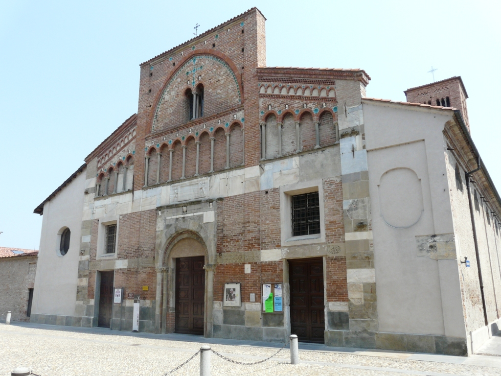

La prima citazione di una chiesa con annesso priorato dedicata a San Pietro e situata nella zona di Cherasco, in località Manzano, risale al 1192. Successivamente, nel 1243, anno della fondazione di Cherasco, il nome di San Pietro fu dedicato al duomo stesso della nuova cittadina, menzionato per la prima volta nel 1259.